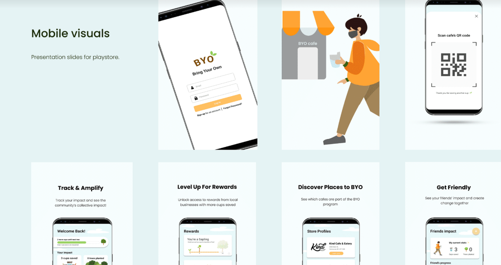
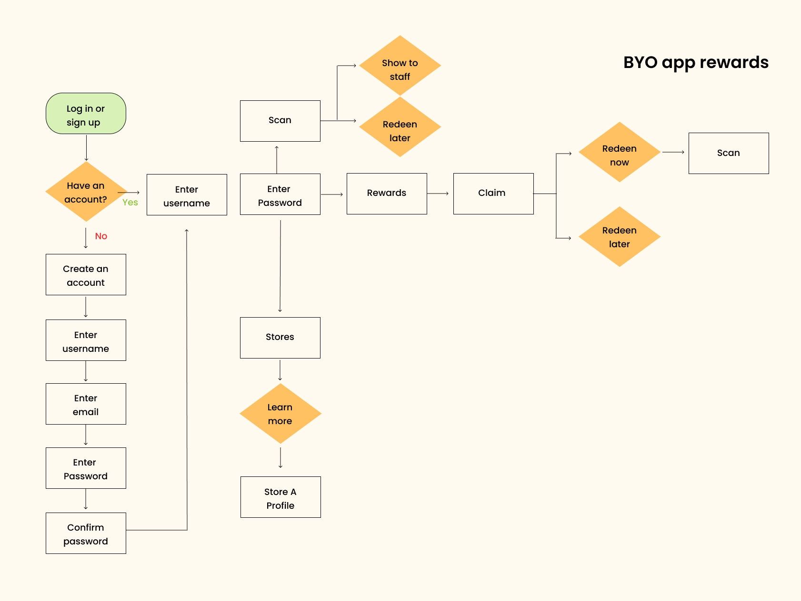
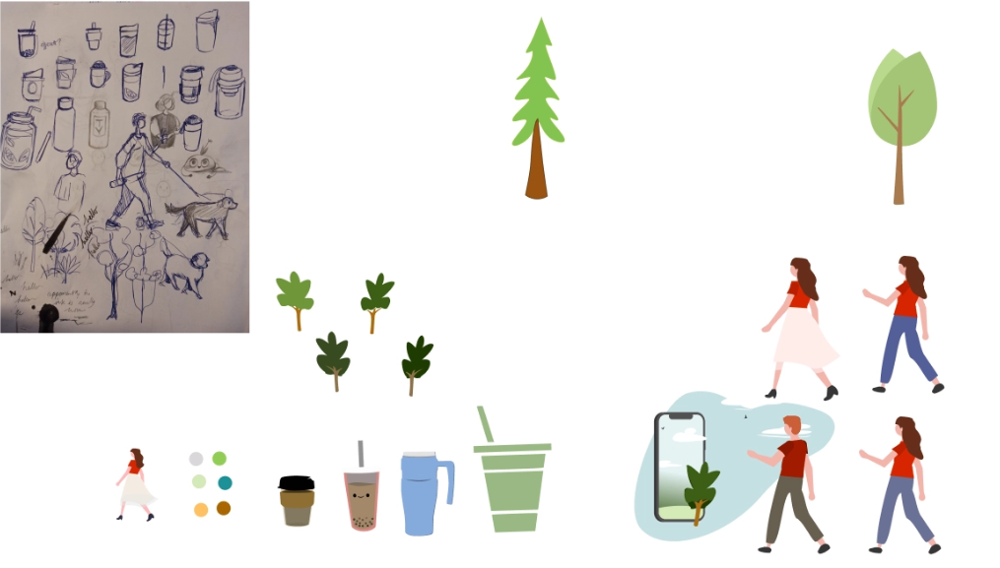
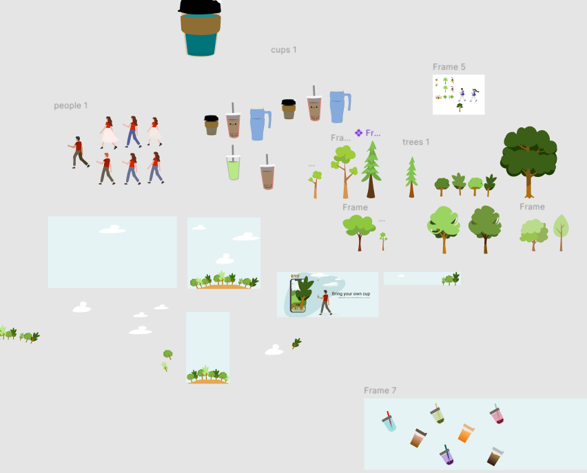
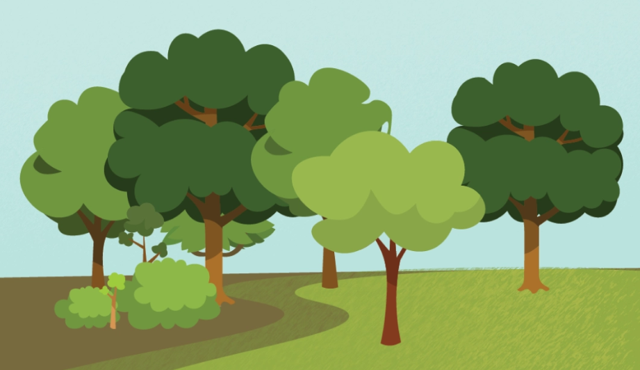

Project Objective
BYO (Bring Your Own Cup) is a sustainability-focused mobile app that rewards users for choosing reusable cups over disposable ones. Our broader goal was to inspire people to reconsider their relationship with waste, making the sustainable choice feel effortless and motivating.
I was responsible for the app's color system and graphic assets, and contributed throughout the UX/UI iteration and focus-group testing cycles.
Real-World Impact
After launch on the Google Play Store, BYO generated measurable environmental results within its first active period.
−397
Single-use cups kept out of landfills
100+
Downloads on the Play Store
+75
Trees planted through the rewards program
Final Product
The prototype walks through the full app experience, from onboarding and scanning at a café, through the rewards redemption flow and tree-planting milestones.

UI iteration exploring how to best encourage user participation across the app's core screens · © Angela Shen
Design Process
Idealization Mapping & User Flow
We began by mapping out every page and decision point needed to complete the user journey. This ensured the experience was coherent before any visual design work began.

User flow v2: mapping the full experience from onboarding through rewards redemption and tree-planting milestones · © Angela Shen

Rewards flow diagram — clarifying the scan → claim → redeem logic before moving into visual design · © Angela Shen
Graphic Design Research
Before creating any assets, I researched visual styles that would resonate with an environmentally conscious audience. Three questions guided this phase:
- What are the priority assets for the app's core screens?
- Which illustration styles are least likely to alienate users?
- How can the color palette feel grounded in nature without being generic?
Moving Beyond "Corporate Memphis"
Research showed that the Corporate Memphis vector style — the default for most apps and startups — is frequently rejected by users for its overly cheerful figures and hyper-saturated colors that feel hollow and disconnected from meaning.
My approach was to build a palette that is calm but purposeful: not overly saturated, and rooted in the visual language of growth and forward motion. Unlike typical Memphis graphics that are decorative without narrative, every asset in BYO was designed to reinforce the idea of environmental progress.
Sketching & Asset Drafting
I began with loose sketches to explore the range of assets needed — people, cups, trees, and environments — testing proportions and styles before committing to a digital direction.

Early drafting — from rough sketches to initial color explorations, establishing the asset vocabulary · © Angela Shen
Asset Production
With the direction established, I developed the full set of graphic assets: illustrated characters in motion, a range of cup types, layered tree and foliage variations, and scenic backgrounds — all built to work modularly across different screen contexts.

The full asset library — modular components designed to work across the app's various screens and states · © Angela Shen

Final forest scene — the visual reward users see as their tree-planting milestones accumulate · © Angela Shen